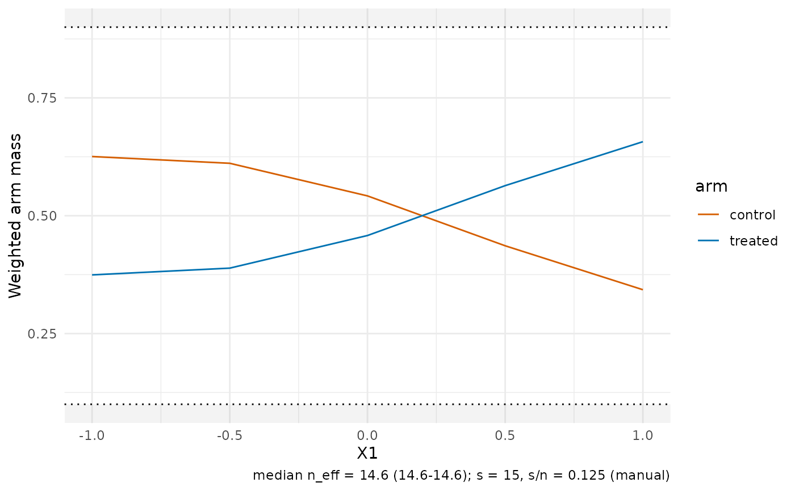

Two views of treatment overlap inside the DNN neighbourhoods of a
cate_dnn() fit. type = "mass" shows the weighted treated and control
mass per target (for simplex weights the two masses partition one, so
the treated mass is the local treated share) with dotted guides and
shaded warning bands outside share_limits. type = "propensity" shows
the local weighted propensity distribution: weighted densities per
selected target when observation-level propensities are available, and
the weighted mean with a q10–q90 whisker summary otherwise.
Arguments
- object
A
cate_resultorclate_resultwith the weight matrixWstored (the default).- type
One of
"mass"or"propensity".Numeric length-2 vector (default
c(0.1, 0.9)); treated shares outside this range are flagged as overlap warnings.- treatment
Optional 0/1 vector of length
n; used when the fit does not store treatment (matrix interface). For CLATE useinstrument.- propensity
Optional numeric vector of length
nin (0, 1); used when the fit does not store propensities.- targets
Optional integer vector of target ids for the density view (defaults to the first/median-
n_eff/last subset above eight targets).- instrument
Optional 0/1 instrument vector for a CLATE fit whose instrument record is unavailable. Stored instrument data take precedence.
- ...
Ignored; reserved for future options.
Details
Inputs resolve in a fixed order: components stored on the fit
(t_vec/e from the data-frame interface), then the treatment/
propensity arguments, then an actionable error. Nothing is
recomputed from first stages.
For clate_dnn() fits these same panels describe instrument overlap:
the arms are A=1 and A=0 and the propensity is P(A=1|V). Both are retained
by the CLATE fit. Treatment uptake D is not used as the instrument arm.
Examples
if (requireNamespace("ggplot2", quietly = TRUE)) {
set.seed(1)
n <- 120
df <- data.frame(X1 = rnorm(n), X2 = rnorm(n))
df$e <- plogis(0.5 * df$X1)
df$T <- as.integer(runif(n) < df$e)
df$m0 <- df$X1
df$m1 <- df$X1 + 1
df$Y <- ifelse(df$T == 1, df$m1, df$m0) + rnorm(n, sd = 0.3)
fit <- cate_dnn(
data = df, x_cols = c("X1", "X2"), y_col = "Y", t_col = "T",
e_col = "e", m0_col = "m0", m1_col = "m1",
X0 = cbind(seq(-1, 1, length.out = 5), 0),
k = 1L, s = 15L, se = FALSE
)
plot_overlap(fit, type = "mass")
}
